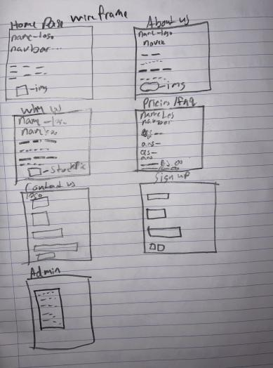
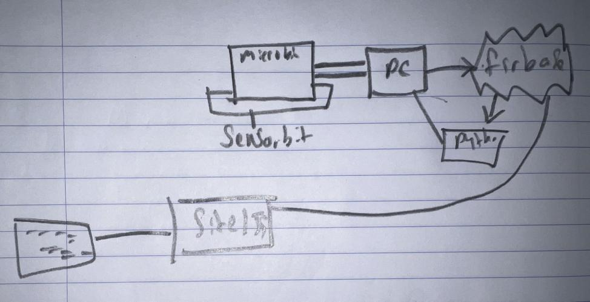

I planned to make this embedded system using a microbit, elecfreaks Sensor:bit, python and firebase in three iteration cycles and the website in two cycles as well using the iterative top-down method. Decomposition is a big part of this method as it involves breaking down issues into simpler individual problems, solving them and combining at the end for the final iteration.
I will be using a microbit and a Sensor:bit (from elecfreaks Smart home Kit). A microbit is a small palm-sized computer with many inbuilt functions, sensors and inputs. I specifically chose the microbit due to its inbuilt thermometer, its ability to be coded with both python & JavaScript, and due to its simple use for all ages. Instead of going with an externally connected speaker with a bunch of wires, I selected the Sensor:bit due to its ease of use. All you do is insert a microbit in the slot. Installation made accessible to all users no matter their technological proficiency
Iteration 1:
Iteration 2:
Iteration 3:
Iteration 1:
Iteration 4:
I used a wireframe to help plan and design the website. It contains 7 pages which include a home page, about us, why buy our products, pricing/faq, contact form, sign up page, and an admin page. 
My system architecture helped me visualise what steps and connections I needed to make before connecting everything. The microbit data will be sent to the pc via serial USB connection, in turn getting sent to both the python script and firebase database. The firebase database then sends the data recieved to the admin page in the website 
The first iteration of both the embedded system and website fulfilled the basic requirements of the brief, as it required minimal user intervention and was a standalone system.
However, after the 2nd and 3rd iteration, all the requirements of the brief, both basic and advanced, were fulfilled. The website acts as one system due to its ability to monitor data captured from the microbit to firebase. There is validation in the site in the sign-up page and admin page.
Different user interface options were added to make the website more accessible for a variety of users. Dark mode for example was essential as the majority of the people who would visit our site would be the elderly and the disabled. The dimness of the screen and contrast of the words makes it easier for them to read and parse the information. Shneiderman's "Eight Golden Rules for interface design" was extremely helpful in designing the site to be more accessible. Jakob Nielsen and his "10 usability heuristics for interface design" was also extremely informative